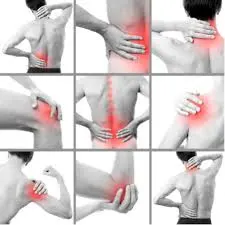
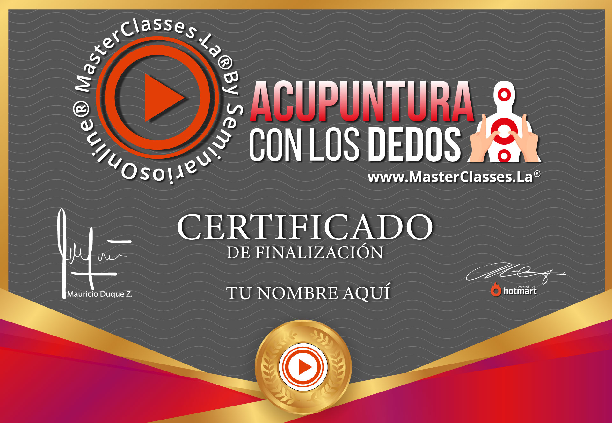
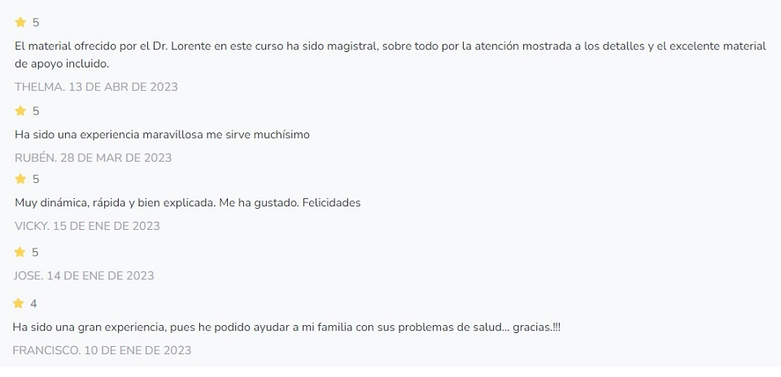
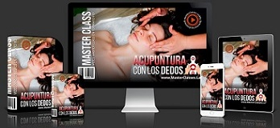

¿TE GUSTARIA APRENDER A ALIVIAR DOLORES COMUNES CON SOLO TUS DEDOS?
¿Haz sufrido dolores de cabeza en el trabajo, casa, en algun lugar soleado o tenido migraña por una
situación de estress o un evento inesperado que te discapacita?
¿Te haz levantado alguna vez con dolor de cuello o de espalda por dormir chueco o sientes dolores
musculares despues de las labores en el trabajo, casa, deporte o gimnasio?

¿Frecuentemente los cólicos menstruales te hacen sentir muy mal, no quieres ver a nadie y solo quieres
estar encerrada en tu cuarto?
¿Te haz sentido desganado o con falta de energia o a media jornada de trabajo sientes que se te acabaron
las pilas para poder terminar el día?
Si haz respondido SI a alguna situación indicada arriba, este curso te puede ayudar o podrias ayudar a alguien para aliviar estos y muchos mas dolores o situaciones, con una menor dependencia a medicamentos.
El curso está dirigido para cualquier persona interesada en aprender esta técnica ancestral china para mejorar la salud de sus clientes, pacientes, familiares o así mismos. No se requiere experiencia alguna. ¡NO LO PIENSES MAS!
¿Que es lo que vas a aprender?
- Aprenderás nociones importantes de acupuntura con tus dedos (digitopuntura), para tratar todo tipo de condiciones de salud únicamente con la ayuda de tus manos.
- Aprenderás la técnica correcta que se debe aplicar para mitigar un dolor en específico.
- Conocerás de forma práctica y gráfica los 40 puntos con los cuales podrás sanar tu cuerpo.
- Aprenderás a masajear zonas de la oreja y la mano con gran efectividad terapéutica.
- Aprenderás cómo y por qué funciona la acupuntura con tus dedos.
- Te acercarás a la filosofía de la medicina china.
- Accederás al certificado avalado por hotmart y seminarios online.

¿Cómo lo vas a lograr?
MÓDULO 1. INICIA AQUÍ
- Lección 1. Bienvenida, quien soy y cuál es mi experiencia.
- Lección 2. ¿Por qué soy la persona idónea para explicarte este tema?.
- Lección 3. Conoce las bases del entrenamiento acupuntura con los dedos.
- Lección 4. Toma las riendas de tu salud.
- Lección 5. A quién va dirigido este entrenamiento.
MÓDULO 2. ORIGEN DE LA MEDICINA CHINA Y SU APLICACIÓN.
- Lección 6. Origen de la medicina china.
- Lección 7. Conoce los dos microsistemas y su importancia.
MÓDULO 3. LO QUE DEBES SABER ANTES DE INICIAR.
- Lección 8. Los tipos de presión que puedes ejercer.
- Lección 9. Las medidas a conocer según la medicina china.
- Lección 10. Como está dividido este curso.
- Lección 11. Conoce el recorrido de los meridianos de la medicina china.
MÓDULO 4. ¿CÓMO TRATAR LOS 14 DOLORES MÁS FRECUENTES EN EL CUERPO HUMANO?
- Lección 12. Conoce el punto más importante de Analgesia del cuerpo.
- Lección 13. Dolores de Cabeza en general.
- Lección 14. Dolor de Cabeza frontal.
- Lección 15. Dolor de Cabeza producido por la menstruación.
- Lección 16. Dolor de cabeza después de beber más de la cuenta.
- Lección 17. Como evitar el dolor de Cabeza.
- Lección 18. Dolor de Muelas.
- Lección 19. Dolor de Espalda.
- Lección 20. Dolor del Cuello.
- Lección 21. Dolores a lo largo de la Columna.
- Lección 22. Lumbago y Ciática.
- Lección 23. Problemas Reumáticos.
- Lección 24. Dolores de Rodilla.
- Lección 25. Neuralgia intercostal.
MÓDULO 5. ¿CÓMO TRATAR LOS PRINCIPALES DOLORES EN CARA Y BRAZOS?
- Lección 26. Túnel carpiano.
- Lección 27. Brazo de tenista.
- Lección 28. Hombro congelado.
- Lección 29. Parálisis facial.
- Lección 30. Neuralgia del trigémino.
- Lección 31. Bruxismo.
MÓDULO 6. ¿CÓMO TRATAR EL JUANETE?
- Lección 32. Juanete.
MÓDULO 7. ¿CÓMO TRATAR LOS PROBLEMAS DIGESTIVOS?
- Lección 33. Introducción a los problemas Digestivos.
- Lección 34. Estreñimiento.
- Lección 35. Diarrea.
- Lección 36. Colon irritable.
- Lección 37. Colitis ulcerosa.
- Lección 38. Hemorroides.
- Lección 39. La Aerofagia o gases.
- Lección 40. Dolor de Estómago en los niños.
- Lección 41. Ardor de Estómago y el Reflujo gástrico.
- Lección 42. Náuseas.
- Lección 43. Gastritis.
MÓDULO 8. ¿CÓMO TRATAR LAS ALERGIAS EN GENERAL?
- Lección 44. Alergias.
- Lección 45. Asma.
- Lección 46. Rinitis.
- Lección 47. Sinusitis.
- Lección 48. Herpes.
- Lección 49. Neurodermitis.
MÓDULO 9. ¿CÓMO TRATAR LAS DOLENCIAS EMOCIONALES?
- Lección 50. La Ansiedad.
- Lección 51. Reducir el Cansancio y aumentar la Energía.
- Lección 52. Recuperar la Alegría.
- Lección 53. Soltar la Ira.
- Lección 54. Romper con las Dudas.
- Lección 55. El Miedo.
- Lección 56. La Angustia.
- Lección 57. El Sobrepeso emocional.
MÓDULO 10. ¿CÓMO TRATAR LAS DOLENCIAS EN LA SEXUALIDAD?
- Lección 58. Menopausia y la Andropausia.
- Lección 59. Dolores Menstruales.
- Lección 60. Como aumentar las Contracciones a la hora del parto.
- Lección 61. La Mastitis.
- Lección 62. Falta de Leche materna.
- Lección 63. Pérdida de la Libido y la Frigidez.
- Lección 64. La Impotencia.
- Lección 65. La Eyaculación precoz.
- Lección 66. Cistitis.
- Lección 67. Retención de orina.
MÓDULO 11. ¿CÓMO TRATAR LAS DOLENCIAS RELACIONADAS CON LOS SENTIDOS?
- Lección 68. Cómo sobrellevar el Tinnitus (Sonidos molestos en el oído).
- Lección 69. Mareos.
- Lección 70. Descompresión de oído en él avión.
- Lección 71. Conjuntivitis.
- Lección 72. Epistaxis o sangrado nasal.
- Lección 73. Pérdida de Olfato.
- Lección 74. La Ronquera.
- Lección 75. El Hipo.
MÓDULO 12. ¿CÓMO TRATAR LOS PROBLEMAS DEL CORAZÓN, HIPERTENSIÓN Y DIFICULTADES RESPIRATORIAS?
- Lección 76. Introducción a los problemas del Corazón.
- Lección 77. La Angina de pecho.
- Lección 78. La Hipertensión.
- Lección 79. La baja de Tensión.
- Lección 80. El Ictus.
- Lección 81. La Hemiplejia.
- Lección 82. La Bronquitis.
- Lección 83. La Disnea (dificultad respiratoria).
- Lección 84. El Resfriado.
MÓDULO 13. ¿CÓMO PREVENIR ATAQUES EPILÉPTICOS Y TRATAR EL INSOMNIO?
- Lección 85. La Epilepsia
- Lección 86. El Insomnio.
- Lección 87. La Fibromialgia.
MÓDULO 14. INFORMACIÓN IMPORTANTE Y DESPEDIDA
- Lección 88. Información importante y despedida.
- Lección 89. Información sobre el nivel avanzado.
Datos del productor
- Desarrollado por el español ALEJANDRO LORENTE, Doctor Honoris Causa por la Universidad Iberoamericana de Ciencias y Desarrollo Humano de México.
- Ha recorrido multitud de países formando a terapeutas y tratando a miles de pacientes.
- Trabajó cerca de 15 años como periodista en la Televisión Exterior Alemana (Deutsche Welle), con la que sigue colaborando (Programa de salud En forma).
- Profesor en las principales escuelas de Fisioterapia y Medicina china de Alemania y Suiza (Top Physio y Acumax).
- Heilpraktiker (desde 2003, título del Estado alemán como especialista en Medicina Natural con potestades médicas) Autor de 8 libros.
- Profesor de Medicina china, Auriculoterapia, Mnemotecnia y Medicina Psicoemocional.
- Coach Emocional, Especialista en PNL e Hipnosis.
- Creador del Método Lorente © de Liberación Física y Emocional.
Testimonios

¿Qué es lo que vas a obtener?

Curso de "Acupuntura con los dedos" con mas de 80 lecciones en video para que los estudies en tus
tiempos
libres y las veces que quieras.